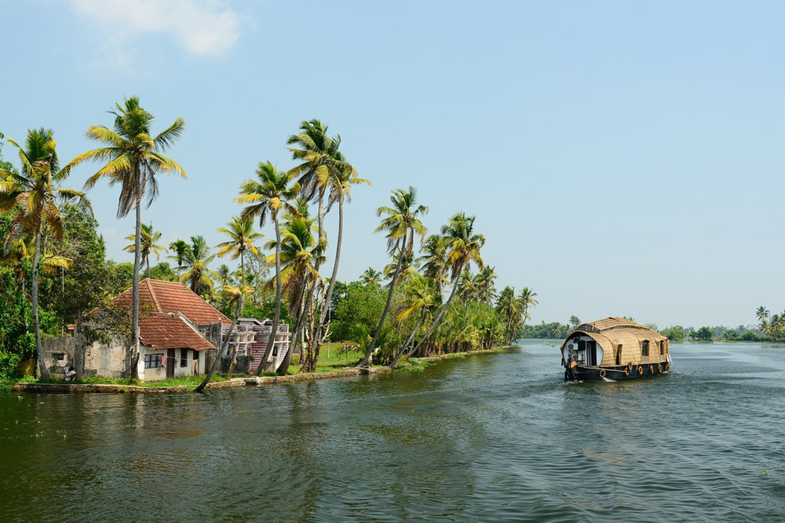
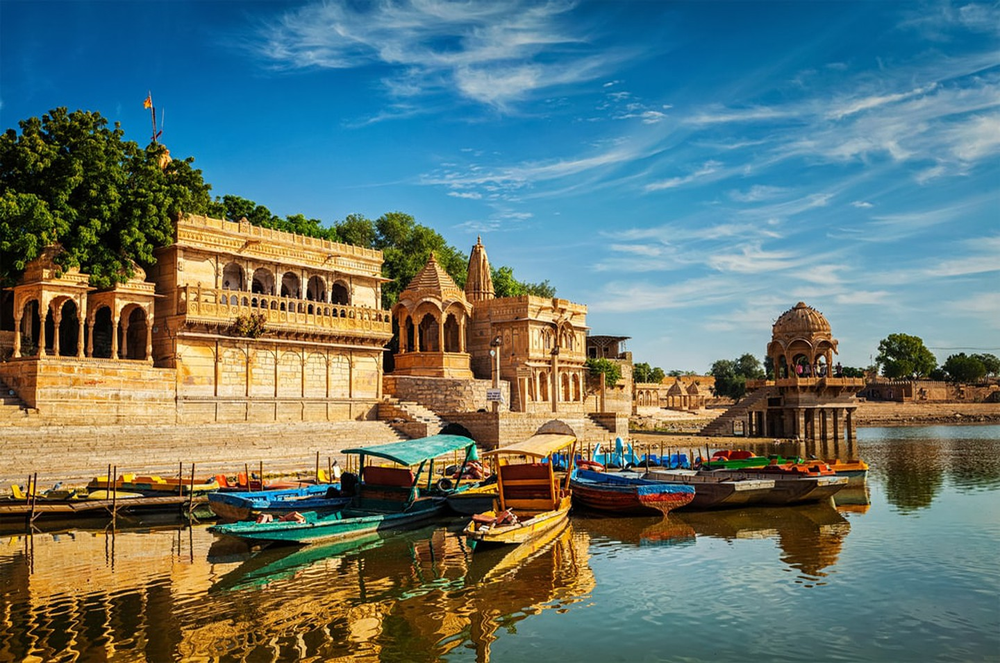
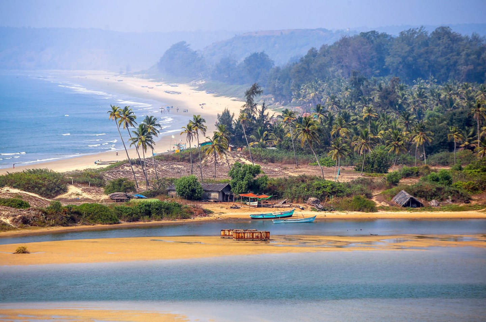
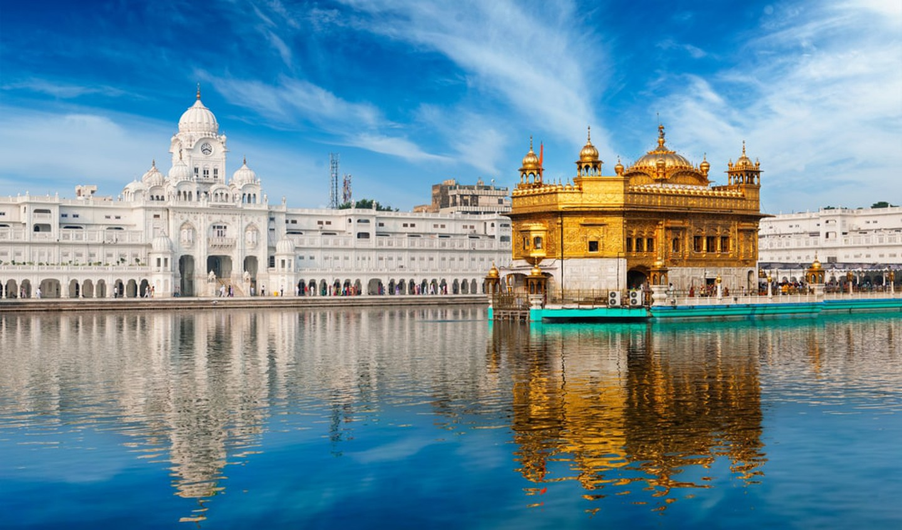

| S.No. | States | Description |
|---|---|---|
| 1. |  | Kerala referred to as ‘God’s Own Country’, Kerala is one of India’s prettiest states. It is home to some of the country’s most stunning beaches, including Kovalam, Muzhappilangad, Varakala and many more. It also boasts breathtaking hill stations, gripping waterfalls, a plethora of historical places and monuments, and a host of national parks and wildlife sanctuaries. For those in search of a serene hill station, Munnar is always a good option. In any case, the very peaceful atmosphere of Kerala never ceases to amaze. |
| 2. |  | Rajasthan also known as the ‘Land of Kings’, Rajasthan is a state full of stories of wars and victories, romance, misfortunes and glories. These folkloric tales of love and heroism are physically reflected in Rajasthan’s many monuments, magnificent palaces and forts. Rajasthan is also home to the vast Thar Desert and its world-renowned Sam Sand Dunes, as well as an array of rare wildlife. Must-see destinations include Jaipur, Udaipur and Jodhpur among many others. |
| 3. |  | Goa also known around the world for its beautiful beaches, Goa is a destination not to be missed when visiting India. Sunsets at the golden-sand beaches are simply incredible, and the local cuisine, which includes many seafood dishes, is mouthwatering. Goa also offers travellers the opportunity to engage in many water sports, such as windsurfing and water-skiing. This is one of India’s smallest states, but one with an old town, and a very unique ethnicity and culture. |
| 4. |  | Punjab famed for its delicious cuisine, ethnic and religious diversity, and rich history – especially its Sikh religious history (its home to the iconic Golden Temple) – Punjab is the perfect destination for those looking for a taste of local culture and stories of ancient empires. To experience true Punjab culture, head to the villages. Travellers should also aim to attend the flag lowering ceremony which takes place at the Wagah border. |